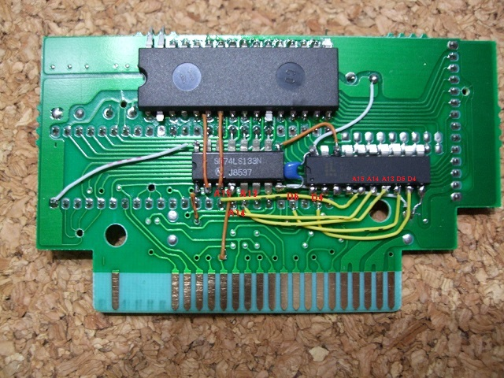
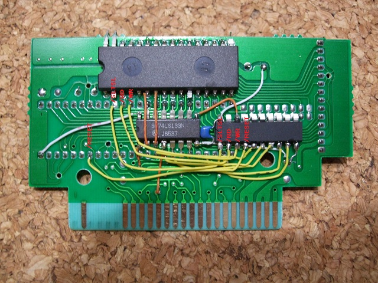

10．GAL16V8Dの配線(1/2)
GAL16V8Dの残りの入力部分の配線をしてしまいます。

まず5-9ピン(A15,A14,A13,D6,D4)を2212P003の同名の信号34,33,32,28,26ピンと接続します。

次に1-4ピン(/SLTSL,/RD,/WR,/RESET)を2212P003の同名の信号10,11,12,42ピンと接続します。10ピン(/SLTSL)は2212P003の足をカットしていますので、基板上の10ピン部分とつなげてください。
 次へ
次へ